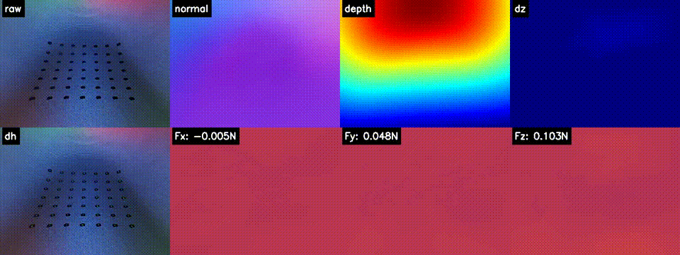

Three-Finger Gripper
A three-finger robotic gripper platform with adapted vision-tactile modules for contact-rich object interaction.
Role: sensor adaptation, fabrication, end-effector integration, and system-level manipulation testing.


